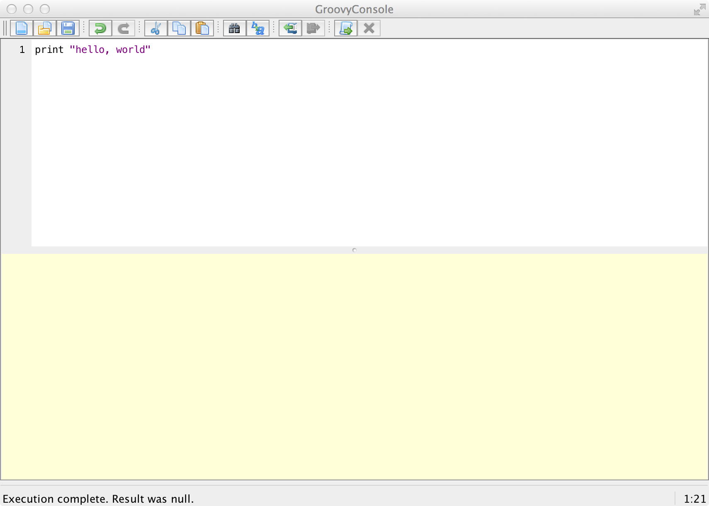

<link rel="import" href="/bower_components/polymer/polymer.html">
<link rel="import" href="/elements/code-snippet.html">
<polymer-element name="sample-page-1" noscript>
    <template>
        <article>
            <h1 id="startingwiththeconsole">Starting with the console</h1>
            
            <code-snippet lang="java">
            class Hello {
                public static void main(String[] args) {
                    System.out.print(&quot;hello, world&quot;);
                }
            }

            Hello.main();
            </code-snippet>
            
            <p>The Groovy Console provides a handy environment for preparing and testing basic Groovy scripts. In order to
                open the console you need to start a command line (or terminal) session and enter the following command:</p>

            <pre><code class="bash">groovyConsole
            </code></pre>

            <p><em>Note: Windows users may also find a link to <code>Groovy Console</code> in their Start menu.</em></p>

            <p>The Groovy Console should look something like the following screen grab:</p>

            <figure>
                
                <figcaption>Screen shot of the Groovy Console application window</figcaption>
            </figure>

            <p>The main parts of the console are:</p>

            <ol>
                <li>The top half is the editor area for adding your Groovy script</li>
                <li>The bottom half is the output area that displays the results of your script</li>
                <li>The menu provides the standard tools for opening and saving files (<code>File</code>) and cut/copy/paste (<code>Edit</code>)</li>
                <li>The <code>Script</code> menu gives you a number of functions you&#8217;ll use as you work through this book:

                    <ol>
                        <li><code>Run</code> will run the script</li>
                        <li><code>Run Selection</code> allows you to select (highlight) part of your script and run only that section</li>
                    </ol></li>
                <li>The <code>View</code> menu lets you reset the output area (<code>Clear Output</code>)

                    <ol>
                        <li>I&#8217;d suggest that you select <code>Auto Clear Output on Run</code> as this helps reduce confusion</li>
                    </ol></li>
            </ol>
        </article>
    </template>
</polymer-element>

<polymer-element name="sample-page-2" noscript>
    <template>
        <article>
            <h1>Page 2</h1>
        </article>
    </template>
</polymer-element>

<polymer-element name="sample-page-3" noscript>
    <template>
        <article>
            <h1>Page 3</h1>
        </article>
    </template>
</polymer-element>              